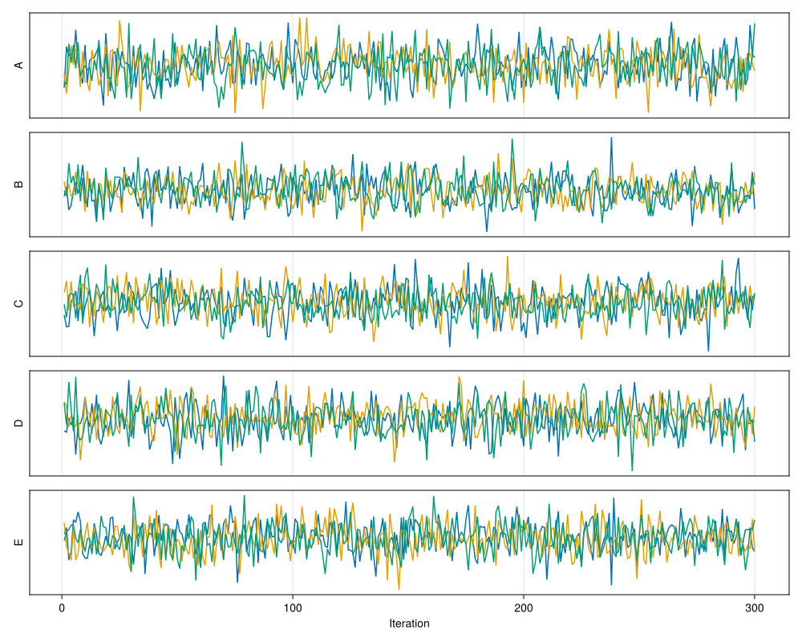
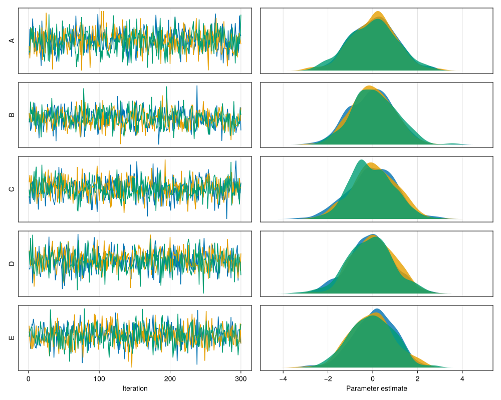
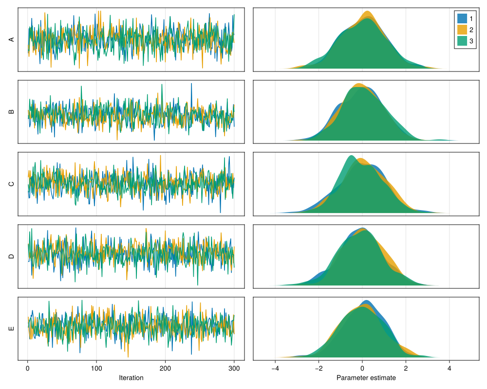

Makie.jl plots
This page shows an example of plotting MCMCChains.jl with Makie.jl. The example is meant to provide an useful basis to build upon. Let's define some random chain and load the required packages:
using MCMCChains
chns = Chains(randn(300, 5, 3), [:A, :B, :C, :D, :E])Chains MCMC chain (300×5×3 Array{Float64, 3}):
Iterations = 1:1:300
Number of chains = 3
Samples per chain = 300
parameters = A, B, C, D, E
Summary Statistics
parameters mean std mcse ess_bulk ess_tail rhat ⋯
Symbol Float64 Float64 Float64 Float64 Float64 Float64 ⋯
A 0.0324 1.0226 0.0340 903.2697 869.7326 1.0016 ⋯
B 0.0080 0.9717 0.0337 830.5137 877.8688 1.0015 ⋯
C 0.0038 1.0124 0.0343 867.8475 848.6913 0.9999 ⋯
D -0.0481 0.9906 0.0327 918.1466 839.6162 1.0011 ⋯
E 0.0060 0.9734 0.0302 1038.5941 912.3222 1.0003 ⋯
1 column omitted
Quantiles
parameters 2.5% 25.0% 50.0% 75.0% 97.5%
Symbol Float64 Float64 Float64 Float64 Float64
A -2.0496 -0.6946 0.0758 0.7028 2.1171
B -1.8296 -0.6719 0.0039 0.6825 1.9137
C -1.9518 -0.6502 -0.0133 0.6851 1.9428
D -2.0363 -0.6882 -0.0158 0.6090 1.8324
E -1.8552 -0.6468 0.0328 0.6693 1.8702
A basic way to visualize the chains is to show the drawn samples at each iteration. Colors depict different chains.
using CairoMakie
CairoMakie.activate!(; type="svg")
params = names(chns, :parameters)
n_chains = length(chains(chns))
n_samples = length(chns)
fig = Figure(; resolution=(1_000, 800))
for (i, param) in enumerate(params)
ax = Axis(fig[i, 1]; ylabel=string(param))
for chain in 1:n_chains
values = chns[:, param, chain]
lines!(ax, 1:n_samples, values; label=string(chain))
end
hideydecorations!(ax; label=false)
if i < length(params)
hidexdecorations!(ax; grid=false)
else
ax.xlabel = "Iteration"
end
end
fig
Next, we can add a second row of plots next to it which show the density estimate for these samples:
for (i, param) in enumerate(params)
ax = Axis(fig[i, 2]; ylabel=string(param))
for chain in 1:n_chains
values = chns[:, param, chain]
density!(ax, values; label=string(chain))
end
hideydecorations!(ax)
if i < length(params)
hidexdecorations!(ax; grid=false)
else
ax.xlabel = "Parameter estimate"
end
end
axes = [only(contents(fig[i, 2])) for i in 1:length(params)]
linkxaxes!(axes...)
fig
Finally, let's add a simple legend. Thanks to setting label above, this legend will have the right labels:
axislegend(first(axes))
fig